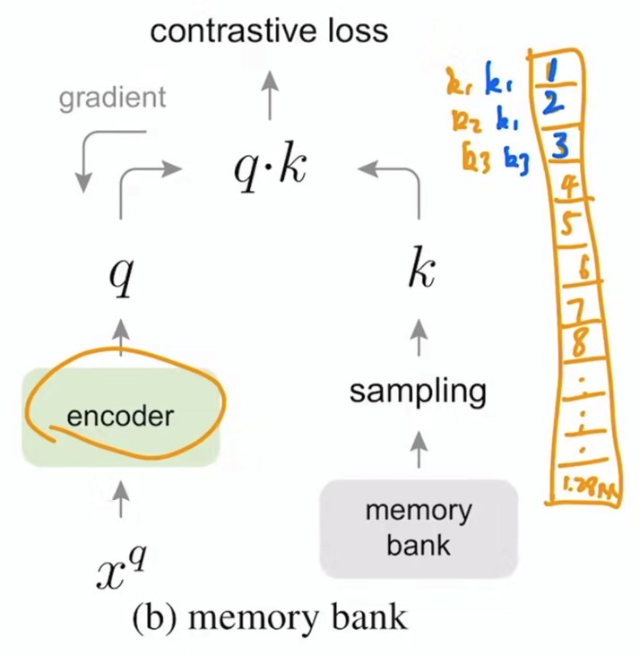
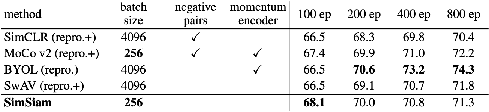

对比学习和稳定学习
对比学习和稳定学习对比学习第一阶段：百花齐放 （18年~19年中）InstDisc InvaSpread CPC CMC 第二阶段：CV双雄 （19年中~20年中）MoCov1 SimCLRv1 MoCov2SimCLRv2 SwAV 第三阶段：不用负样本BYOL 针对BYOL的博客和他们的回应 SimSiam 第四阶段：基于Transformer MoCov3 DINO 总结术语因果推理和稳定学习背景1. 现状分析2. 相互关系（T和Y为例）为什么它有效？
对比学习
第一阶段：百花齐放 （18年~19年中）
InstDisc
Instance Discrimination是巨人的肩膀。
- 启发：视觉相似的东西在分类器的分数比较高，比如猎豹的输入，雪豹也会分数比较高。
- 代理任务：提出个体判别任务。希望每个图片都是自己的类，和其他图片尽量地分开。
- 对比学习
- 正样本：原图片本身，可以经过一些数据增强
- 负样本：数据集里所有其他图片
- 要点：大量负样本特征存在哪儿？解决：Memory Bank的形式，即存在字典里。
- 细节：ImageNet有128万张图片，那么这个字典有128万行，所以每个维度不能太高，128维。训练时每次从字典里随机抽4096个负样本，并且更新正样本。最后使得这个128维特征尽可能有区分性。目标函数NCE loss。

- 总结关键词：里程碑；超参数；个体判别任务；无监督表征学习
InvaSpread
Invariant and Spreading可以理解是SimCLR的前身。
启发：同样的图片经过不同数据增强，出来的特征应该类似，不同图片则应该不类似。
代理任务：个体判别任务
对比学习
正样本： 原图片或其数据增强
负样本： 同一个mini-batch里其他所有图片
要点：同一个mini-batch里选择正负样本，可以端到端学习了。 一个编码器，不需要外部的数据结构去存储大量负样本。
细节：仍然是要求和正样本low-dim特征尽可能接近，和负样本尽可能拉远。目标函数NCE loss的一个变体。
总结关键词：端到端学习

问：为什么同样是端到端学习，它没有取得SimCLR那么好的效果呢？
答： MoCo论文反复强调的，负样本最好是足够多。而本文作者是没有TPU的，它的batchsize只有256，意味着它的负样本只有(256-1)x2个。 再加上缺少SimCLR那么强大的数据增广，以及最后提出的mlp projector。
CPC
Contrastive Predictive Coding（对比预测编码）用在了生成式的代理任务，是一个很通用的结构。
启发：
代理任务： 不同于前面两篇的判别式范畴的，本文则研究预测型的代理任务，属于生成式范畴。
对比学习
正样本：未来时刻的输入
负样本：任意选取输入
要点：
细节：
总结关键词：预测型；各种模态通用
CMC
Contrastive Multiview Coding
启发：人类观察世界是通过很多个传感器，每一个视角都可能是带噪声或者不完整的。但最重要的一些信息是可以在所有的这些视角中间共享的，比如基础物理定律、几何形状、语义信息。
例子：一只狗既可以被看见，也可以被听到，也可以被感受到。
目的：学一个强大的信息，具有视角的不变性。增大所有视角之间的互信息。
代理任务：多视角多模态任务
对比学习
正样本：一个物体的很多个视角。如NYU RGBD数据集有原始图像、深度图、平面法线、分割图，这四个视角互为正样本。
负样本：不配对的视角。
要点：证明了对比学习的灵活性，证明了多视角、多模态的可行性。所以接下来① OpenAI很快出来了CLIP这个模型。② CMC原版人马做了一个基于对比学习的蒸馏方法，也就是teacher模型的输出和student模型的输出做成正样本对。③ 缺点是不同模态或者视角，可能长得不一样，需要不同的编码器。增加了训练时的计算代价。比如CLIP的文本端用的bert，图像端用的vit。但这也是transformer真正吸引人的地方，已经有人这么做了（MA CLIP），用一个transformer编码器，同时处理两个输入模态，效果反而更好。
第二阶段：CV双雄 （19年中~20年中）
MoCov1
Momentum Contrast动量对比学习
启发：从字典查询的角度来看待对比学习。很大的、一致的字典对无监督对比学习有好处。
代理任务：个体判别任务
对比学习：简单、好用、强大，盘活了计算机视觉领域
可以看作动态字典
正样本：
负样本：
难点：无监督表征学习在nlp领域很成功（GPT、BERT），但在视觉领域就远不如有监督，因为视觉的原始信号是在一个连续、高维的空间并且没有很强的结构语义信息（不像单词）。
前人工作的不足：
end-to-end：query和key都来自同一个batch。虽然一致性很强，但受限于字典大小。SimCLR就是这种，因为Google有TPU，batchsize上到了8192。
memory bank：字典可以很大，比如InstDisc，但由于模型更新后，对于这批用到的key会得到新的key放回去。一致性就很差。

要点：
特征空间、表征空间（embedding space）的正样本拉近，负样本远离。不需要标签信息。
问：要知道哪些样本相似/不相似，不还是需要标签信息么？
答：视觉领域大家设计一些巧妙的代理任务，从而人为的定义一些规则，这些规则可以用来定义哪些图片是相似的或不相似的。这也是所谓的自监督训练。规则的定义可以很灵活的开脑洞，如CLIP。
动量在数学上可以理解为加权移动平均。说白了，不希望当前时刻的输出完全倚赖当前时刻的输入，让之前的输出也来凑凑热闹。MoCo就是利用动量的这一特性从而缓慢地更新编码器，使得学习到的字典中的特征尽可能地保持一致。

效果好：使用普遍采用的linear protocol去测试的话，超越了之前所有无监督学习方法。更重要的是，MoCo学到的特征是能够很好地迁移到下游任务的。
注：linear protocol即冻住骨干网络（backbone），只学习最后的全连接层（分类头）。
队列：最新的mini-batch进入队列，而最老的mini-batch出队列。这样可以把字典大小和mini-batch的大小剥离开。不然字典太大，显卡是吃不消的。
队列+动量：队列能解决字典大小的问题，但这样会使得字典的一致性变差（因为从不同时刻的编码器抽取特征）。所以使用动量编码器。
损失函数：和一个固定目标进行重建式（L1 or L2）、判别式（eight positions）、对抗式（Adversarial）的损失。而对比学习的目标是不断改变（on-the-fly）的，某种形式的对比学习目标函数和特定代理任务是配对使用的。
InfoNCE：以ImageNet上做个体判别为例，如果用CE loss，相当于softmax要出来128万类，这是工作不了的。NCE（noise contrastive estimation）就把128w类的分类问题，简化为正负样本的二分类问题，从而还是可以开心的工作。至于近似（estimation），是指只从128w里选一部分做负样本好了，当然这个样本越多越好。不过Kaiming认为二分类还是不太好，毕竟负样本之间也是有差距的，所以最后其实还是用的CE loss，K个负样本就作为K+1类，只不过起名InfoNCE并加以解释。
细节：MoCo还实验了把IN-1M数据集（ImageNet-一百万）换成IG-1B（Instagram-十亿）。但提升没有那么大，① Kaiming等人认为可能是要找到更合适的代理任务，比如类似nlp的完形填空。
在两年后，Kaiming提出了MAE：mask auto-encoding。② 使用Linear Classification Protocol的方式迁移到下游任务时，grid search出来学习率最佳是30！这是很不可思议的，很少有人设比1大的学习率。Kaiming认为该现象说明无监督学习学到的特征分布，和有监督学习的特征分布是非常不一样的。
Keywords：里程碑；CVPR最佳论文提名；无监督/自监督学习；迁移下游任务；动量；队列
意义：
Yann LeCun：强化学习是蛋糕顶上缀着的一颗樱桃，监督学习是蛋糕表面的糖霜，虽然现在的人工智能看起来很漂亮，但人类对如何制作蛋糕胚本身——无监督学习，还是摸不着门路。
超越了有监督预训练的模型，给视觉领域吃了一颗定心丸：无监督真的可以。我们真的不需要大规模标好的数据去做预训练。MoCo可以学到很好的特征，然后这个特征具有很好的迁移性，意味着无监督和有监督的表征学习中间的鸿沟已经填上了。
SimCLRv1
Simple Contrastive Learning
启发：
代理任务：
对比学习
正样本：N
负样本：2(N-1)，和InvaSpread一样。
要点：
f(·)共享权重，也就是只有一个编码器；SimCLR的一个重大创新点是在这个h特征之后又加了MLP层g(·)，直接提点10个点；

可以看到① 加上g(·)提升10个点，② 其实z最后的维度是多少没有太大影响，所以对比学习现在都学一个比较低的特征维度，③ g(·)里加上relu更好一点
理解为有了特征hi做一个非线性变换得到另一个特征zi。而zi是用来做对比学习的特征。g(·)只在训练的时候用，而在迁移到下游任务时，是扔掉的。

损失函数仍然类似InfoNCE，MoCo和SimCLR是同一时期的工作，并且互相引用。
更多数据增强

细节：
Keywords：简单；MLP projector；数据增强；大batch size + LARS优化器；学习更久
MoCov2
只有两页的一个技术报告。
启发：把SimCLR里比较好用的两个技术搬到MoCo上。
要点：MoCo + MLP projector + more data augmentation
细节：

总结关键词：MoCov2
SimCLRv2
SimCLRv2只是论文一个很小的部分，大部分内容在讲如何做半监督。
对比学习只占第三页半页的篇幅。
- 要点：SimCLR + 换更大的骨干网络 + 两层MLP projector + 动量编码器
- 细节：
- 总结关键词：SimCLRv2
SwAV
Swapping Assignments between Views
启发：
- 对比学习和聚类的方法结合在一起。这个想法不是偶然，因为聚类的方法也是一种无监督学习的方式，也是希望相似的物体在某一个聚类中心附近，不相似的推开。
- 认为之前的CL方法拿特征和特征去做这个对比，有点原始也有点费资源。能不能和聚类中心比。
正样本：Multi-Crop得到。
要点：
有了Z1、Z2后，不是在特征上做对比学习的损失。而是通过一个Clustering的方法，让特征Z生成一个目标Q。如果X1和X2是正样本，Z1和Z2就应该很相似，按道理说互相可以做预测。即：
Z1 * C能预测Q2，Z2 * C能预测Q1
细节：正样本使用了Multi-Crop的技术。以往的工作resize到256，crop2x224，本论文提出crop2x160+4x96，计算量差不多的情况下正样本更多。并且全局（160）和局部（96）特征都关注。
分析下来，聚类和MoCo v2比起来并没有什么优势，真正提点的是Multi-Crop这个技术。
总结关键词：聚类中心；SOTA；Multi-Crop
第三阶段：不用负样本
BYOL
Bootstrap Your Own Latent
(Feature、Hidden、Embedding、Latent都是特征的意思，就是各种花里胡哨的用法而已。)
代理任务：预测型任务，一个视角的特征预测另外一个视角的特征。
正样本：
负样本：如果没有负样本，模型可能会学习捷径解，躺平了，不论什么输入都同一种输出，loss永远是0。所以负样本在对比学习里是个必须的东西。
细节：
（原论文图）

使用动量编码器，sg表示stop-gradient即detach掉，MLP projector里使用BN层，使用MSE loss，和别的工作一样训练完成后只需留下fθ，其他可以舍弃。
- 总结关键词：无需负样本；BN层很关键；MSE loss；stop-gradient
针对BYOL的博客和他们的回应
发现：有人在复现BYOL时发现仍然出现了模型坍塌，但他相信DeepMind的工作，开始从自己的复现代码找问题，发现问题出在BN层。因为MoCo的codebase很好，他们复现BYOL时沿用了MoCo的仓库。但是MoCo的网络里是不使用BN层的。
 （SimCLR） （MoCo v2）
（SimCLR） （MoCo v2） （BYOL）
（BYOL）Name Projection MLP Norm Prediction MLP Norm Loss Function Contrastive Performance 5 Contrastive Loss None None Cross Entropy Explicit 44.1 BYOL Batch Norm Batch Norm L2 Implicit 57.7 Projection BN Only Batch Norm None L2 Implicit 55.3 Prediction BN Only None Batch Norm L2 Implicit 48 No Normalization None None L2 None 28.3 Layer Norm Layer Norm Layer Norm L2 None 29.4 Random — — — None 28.8 博客：
与 SimCLR 和 MoCo 等之前的工作不同，BYOL展示了一种最先进的图像表征自监督学习方法，没有明确的对比损失函数。这通过消除损失函数中对负样本的需要来简化训练。我们强调了我们在 BYOL 复现工作中的两个令人惊讶的发现：
(1) BYOL 在去除批量归一化后的性能通常不比随机的好，并且
(2) 批量归一化的存在隐含地导致了对比学习的一种形式。
这些发现强调了在学习表征时对比正负样本的重要性，并帮助我们更基本地了解自我监督学习的工作方式和原因。
回应：
这篇博客在社区的影响力很大，也激起了BYOL作者的强烈rebuttal。因为他们认为这篇博客的解释大大降低了BYOL工作的价值。如果BYOL仍然是通过BN层里的信息隐式地利用负样本，工作的创新性就大大降低了。还是找了个东西做对比，还是脱离不了对比学习的范畴。
所以赶紧做实验，并回应了一篇BYOL works even without batch statistics，使用group norm和weight standardization也可以训好。
并且和博客作者达成了比较一致的结论：BN层和原来的设计初衷一样，主要的作用还是帮助模型稳定训练。提供模型训练稳健性，从而不模型坍塌，而不是提供负样本。
“大家不要被博客带跑偏了，赶紧来follow我们的工作吧，BYOL这个套路没有问题”
SimSiam
Simple Siamese （Kaiming团队再次出手）总结性的论文
对比学习

将所有使用孪生网络（即结构一样、共享参数）

主要是想说明trick全拿掉，照样能训练。论文里还有另外一个表格显示，MoCo v2和SimSiam在下游任务的迁移中效果是最好的。
负样本：和BYOL一样，不需要用。
细节：很简单，说白也是MSE loss。p1预测z2，也可以z2预测p1。
贡献：
- 对比学习的成功仿佛是很多很小的点堆起来的性能，难以分析。本作化繁为简，方便分析。
- 认为stop-gradient起到重要作用，可以想象成一个EM（期望最大）的算法。因为有了sg后，一个模型其实就被人为劈成了两份，解决两个子问题。不会模式坍塌。而且和SwAV聚类的思想有点像了。
第四阶段：基于Transformer
MoCov3
= MoCo v2 + SimSiam
- 启发：
- 代理任务：
- 对比学习
- 正样本：
- 负样本：
- 难点：
- 细节：
- 总结关键词：
DINO
- 启发：
- 代理任务：
- 对比学习
- 正样本：
- 负样本：
- 难点：
- 细节：
- 总结关键词：
总结
术语
- 代理任务(pretext task)：一般指大家不太感兴趣的任务，没有实际应用场景，它们的提出主要是为了学习一个好的特征/数据表征。
- 自监督学习(self-supervised)：实际是无监督学习的一种，但大家一般混着叫，不做区分。
因果推理和稳定学习
背景
1. 现状分析
AI开始涉足越来越多风险敏感的领域（Performance Driven → Risk Sensitive），比如医疗、金融、交通、法律、军事等。
而现在的AI严重缺失可解释性、稳定性（I.I.D假设→OOD）。
一个合理的原因是，AI倚赖“相互关系”（Correlation），而相互关系是很难解释的、不稳定的。
2. 相互关系（T和Y为例）
因果（Causation）T→Y
混淆（Confounding）X→T and X→Y, Ignoring X
偏差（Sample Selection Bias）T→S and Y→S, Conditional on S

只有因果关系是稳定、可解释的，而混淆与偏差是站不住脚的。
因果关系 定义：保持其他一切不变时，当且仅当改变 T 导致 Y 改变时，T 导致 Y。
T causes Y if and only if changing T leads to a change in Y, while keeping everything else constant.
因果效应 定义：T的单位变化造成Y变化的量。
将因果关系引入学习的好处：更具可解释性，且更稳定。
为什么它有效？